Overview專案概述
Hiredly is a Malaysian job platform, used by jobseekers from entry level through mid-career.
Hiredly 是一個馬來西亞的求職平台，使用者橫跨從社會新鮮人到中階職涯的求職者。
The focus had always been on the website, so the app sat untouched for a long time. The look was outdated, and so was the experience of using it.
這個 App 很擅長讓使用者瀏覽職缺，卻不擅長讓瀏覽轉化成應徵。使用者找到喜歡的職缺後，接著遇到的卻是還沒準備好的個人檔案、沒有的履歷，以及一個看不懂在說什麼的狀態畫面。
So we revamped the whole app, look and feel included, with one thing in mind: make the path from opening the app to sending an application as short as it should be.
於是我們重新設計了整個 App，連視覺風格也一併翻新，心裡只有一個目標：讓從打開 App 到送出應徵的路徑，縮短到它原本該有的長度。
The Problem問題所在
Problem 1問題 1
Signing up was too easy註冊太簡單了
A short onboarding is a good onboarding. Sounds about right, but our profile was too thin to actually apply with. Users only found out what was missing after hitting apply. That's the worst time for an obstacle, right when they're ready to commit.
簡短的新手導覽，聽起來就該是好的。話是沒錯，但我們的個人檔案太單薄，根本不足以拿去應徵。使用者要等到按下應徵鍵之後，才發現資料不夠完整。這正是設下阻礙最糟的時間點，偏偏就在他們終於準備好要行動的那一刻。
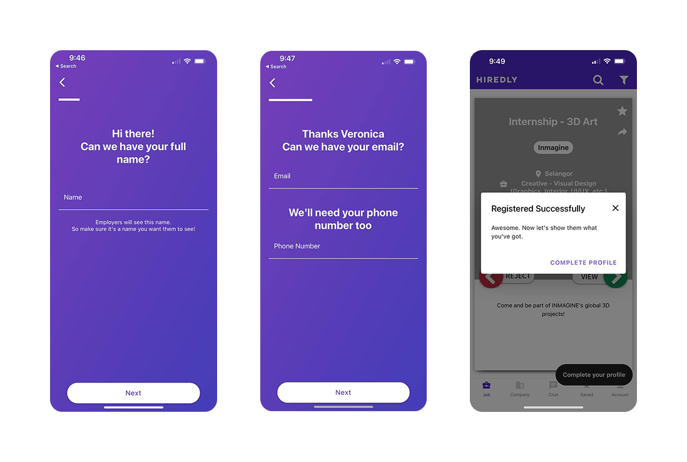
Problem 2問題 2
The homepage was a Tinder swipe首頁變成了 Tinder 式滑動
The app opened straight into a swipe feed, with no home or overview, just a decision to make. It was our most distinctive feature, but 81% of surveyed users said they'd rather scroll a list. Rejecting a job felt permanent, so the ones people were only half sure about were just gone.
App 一打開就直接進入滑動式的職缺列表，沒有首頁、沒有總覽，只有一個要馬上做的決定。這是我們最具辨識度的功能，但 81% 的受訪使用者表示，他們寧願用清單瀏覽。拒絕一個職缺感覺是永久的，那些使用者只是還沒拿定主意的職缺，就這樣消失了。
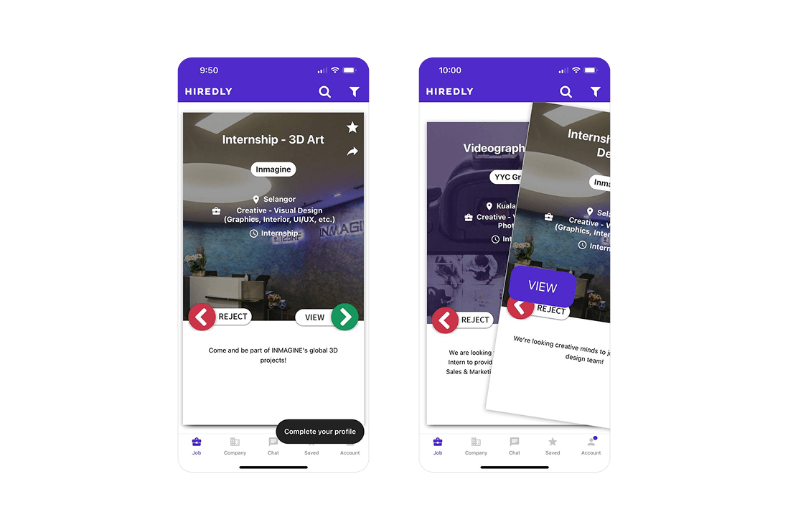
“Some jobs I don't mean to reject, just need some time to consider, and may want to have a second look at after looking at other opportunities.”
「有些職缺我不是真的想拒絕，只是需要時間考慮，看過其他機會後可能還想再回頭看看。」
— from user survey
—— 2022 年使用者調查
Problem 3問題 3
Job details were one long scroll職缺詳情是一長串的捲動頁面
Job and company info were stacked on one page. 67% of users said the company profile and environment were what they cared about most, but it was buried at the bottom.
職缺與公司資訊疊在同一個頁面上，要比對兩者就得不斷上下捲動。這件事很重要，因為 67% 的使用者表示，公司檔案與工作環境是他們最在意的因素，而這些資訊卻被埋在頁面最底部。
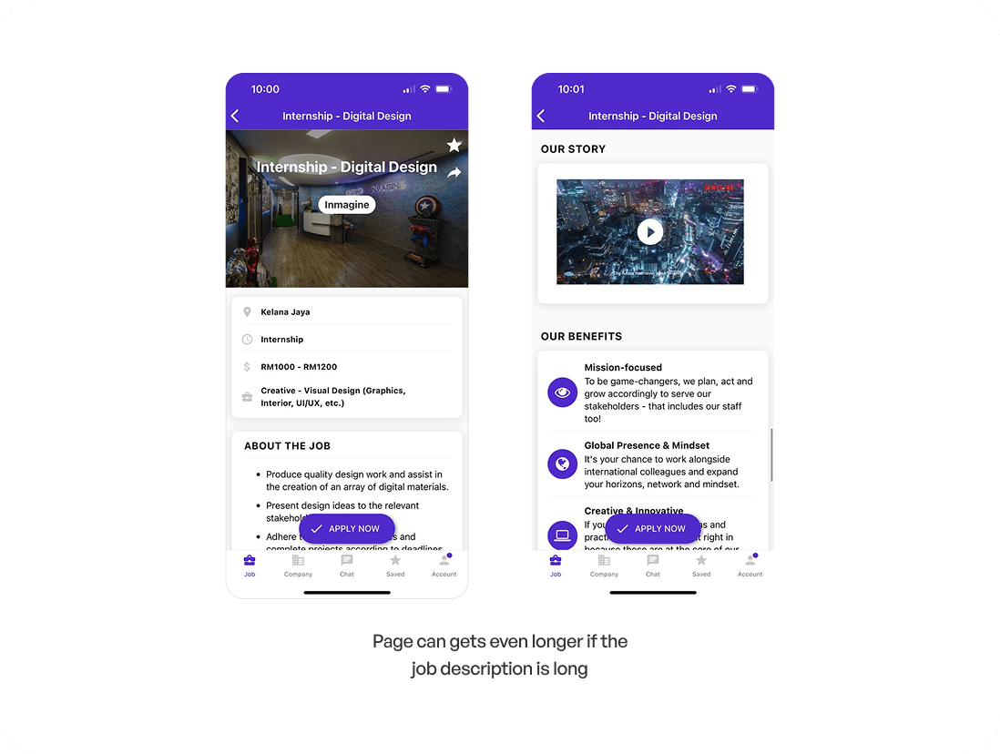
Problem 4問題 4
User left hanging after applying應徵之後就沒下文了
User without a resume can still apply for a job, but they see a 'pending' status. No indication that a resume was still needed for the application.
送出申請後只會看到「待處理」，然後就沒了。完全沒有任何提示告訴你，履歷還沒補上，申請根本不會有下文。
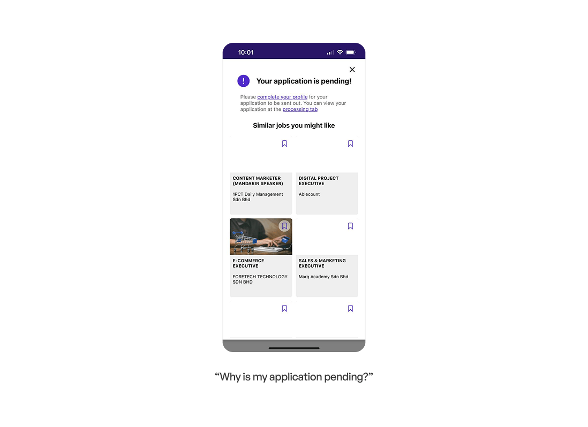
How Might We我們可以如何
How might we support users through the whole application journey, not just the moment they hit apply?
我們該如何支持使用者走過整個應徵旅程，而不只是他們按下應徵的那一刻？
The Process我們是怎麼走到這裡的
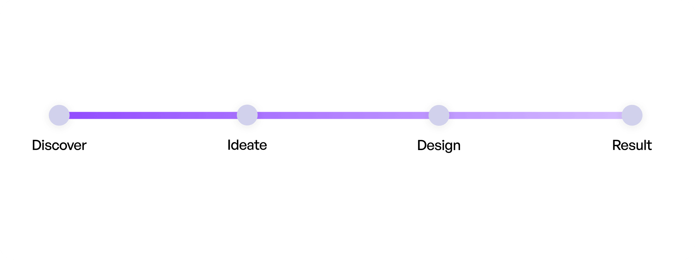
Discover探索
We sent out a user survey through marketing and got 400+ responses back, giving us a clear read on how people actually felt about the app.
我們透過行銷管道發出使用者問卷，收到超過 400 份回覆，讓我們清楚了解使用者對這個 App 的真實感受。
prefer a regular scroll list over the swiping motion when looking for jobs.
的使用者在找工作時，比起滑動配對，更偏好一般的清單捲動瀏覽方式。
users prefer to review company benefits and environment before they apply.
的使用者認為公司檔案與工作環境是最有幫助的功能。
Users weren't aware of features we already had, like undo application, notifications, or certain filters.
使用者根本不知道我們早就有的功能，例如取消應徵、通知，或是某些篩選條件。
Alongside the survey, we audited our own app against competitors, mapping every screen and flow in FigJam to see exactly where we stood.
除了問卷之外，我們也把自己的 App 拿去和競品做比較，在 FigJam 上完整整理每個畫面與流程，清楚看出我們的位置。
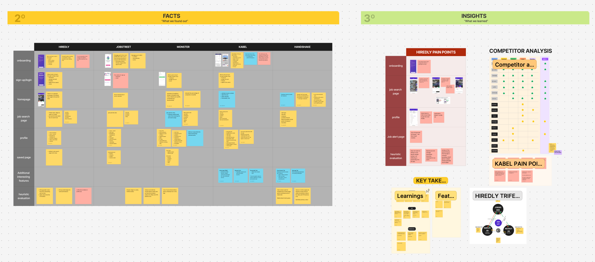
Ideate發想
With the research and key insights in hand, we jumped into brainstorming the app design, pulling inspiration from work we found online before putting our own ideas down on paper.
有了研究與重點洞察，我們開始腦力激盪整體設計方向——先參考網路上找到的案例，再落實成自己的想法。
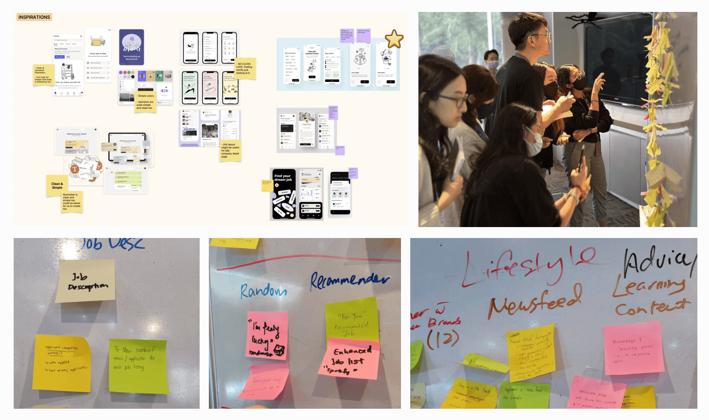
What we learned重點洞察
Users notice visuals first. Employer branding needed to surface earlier than the detail page.
使用者最先注意到的是畫面。雇主品牌需要比職缺詳情頁更早出現。
The swipe was our differentiator, and our blocker.
滑動式介面曾是我們的差異化賣點，也是我們的絆腳石。
Undo, filters, and notifications were already built — nobody knew.
復原、篩選、通知其實都早就做好了，只是沒人知道。
Design Goal設計目標
Support users across the whole journey, not just the moment they hit apply.
支持使用者走過整個應徵旅程，而不只是他們按下應徵的那一刻。
Design設計
Sketches turned into prototypes, with developers involved from the start. In fact a few interaction ideas actually came from them!
草圖進入原型階段，工程師也從一開始就參與其中——有些互動的想法其實是他們提出來的。
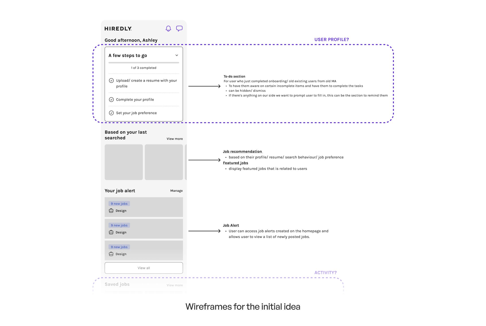
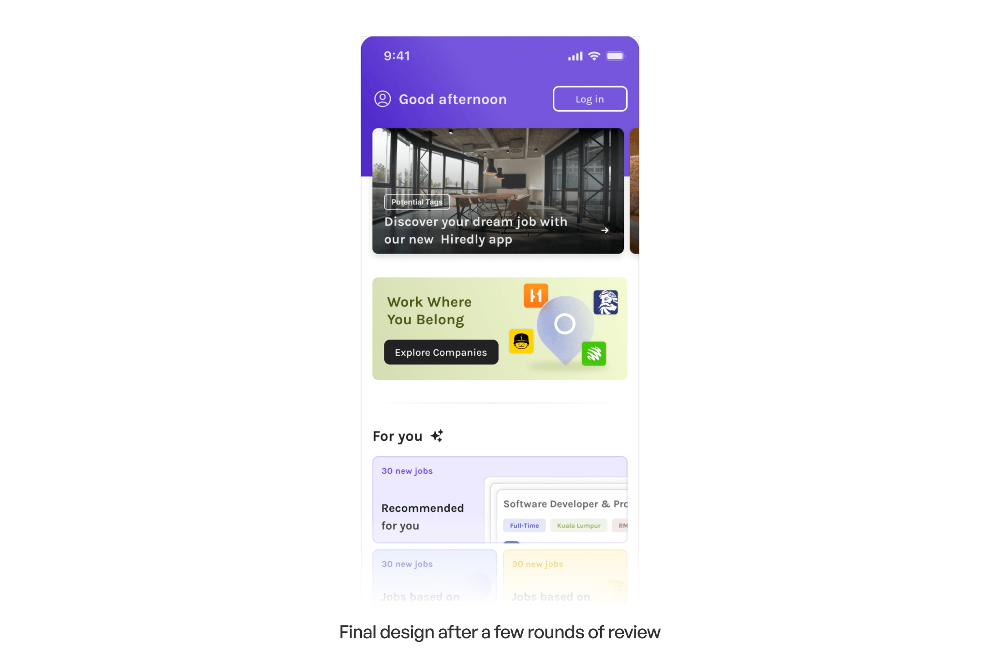
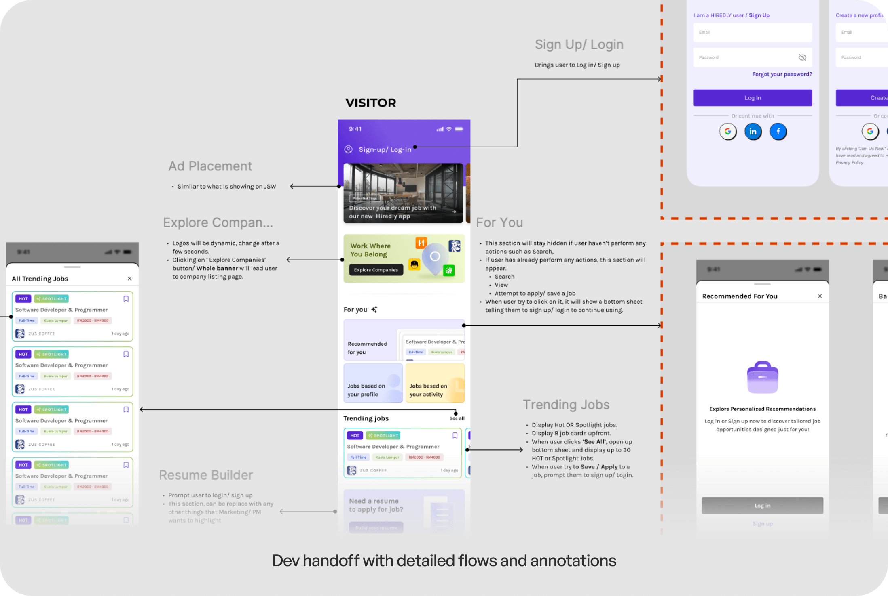
The Outcome我們設計了什麼
Everything below is organised the way users actually move through the app.
以下內容依照使用者實際使用 App 的流程來安排。
Before Applying應徵之前
A profile that doubles as a resume一份身兼履歷的個人檔案
By the time user finds a job worth applying for, their resume should already be sorted.
目標是:等使用者找到值得應徵的職缺時，履歷早就已經準備好了。
Users with a resume can upload it and we'll fill in their profile. Users without one can fill it in manually during onboarding, or skip and come back to it, and we'll generate a resume from what they enter.
已經有履歷的使用者可以直接上傳，我們會用履歷內容自動填入個人檔案;沒有履歷的使用者則可以在新手導覽時手動填寫，或先略過、之後再補，我們會依照填入的資料自動生成一份履歷。
Either way the profile holds everything. When something changes they update it and regenerate the resume, instead of editing a file and uploading it again.
不論走哪條路，個人檔案都會保留所有資訊。之後有任何異動，使用者只要更新個人檔案，履歷就會跟著同步更新，不必再重新編輯檔案、重新上傳。
Before Applying應徵之前
A homepage, finally一個真正的落地頁
A new homepage that allows users to explore based on the their profile and activity. It works signed in or not, so there's something useful on screen before the app knows anything about them.
一個真正發揮大廳作用的全新首頁。根據使用者的個人檔案與行為顯示媒合的職缺，並提供常用頁面的快速入口。不論是否登入都能使用，就算 App 還不認識使用者，畫面上也早已有派得上用場的內容。
While Applying應徵過程中
A job list that says more不只是一個職缺名稱
Job summaries and company media sit on the list page itself, so users get a sense of the role and the company without opening anything.
職缺摘要與公司相關素材直接顯示在列表頁上，不用點開就能了解職缺與公司概況。搜尋、篩選與復原功能，也都被放在使用者找得到的地方。
While Applying應徵過程中
Job and company, side by side依序排好的資訊
Sticky tabs between job details and company details so users can move between the two instead of scrolling through both.
職缺詳情與公司資訊之間改用 Sticky 分頁切換，讓使用者能直接在兩者之間跳轉，而不用整頁上下捲動。
After Applying應徵之後
One place for all activity清楚知道自己的進度
All user activity such as application status and saved jobs/companies are now on one page, so there's always somewhere to check.
應徵狀態與已儲存的職缺都集中在同一個頁面，隨時都能查看進度。改變心意了嗎？復原功能就在旁邊。
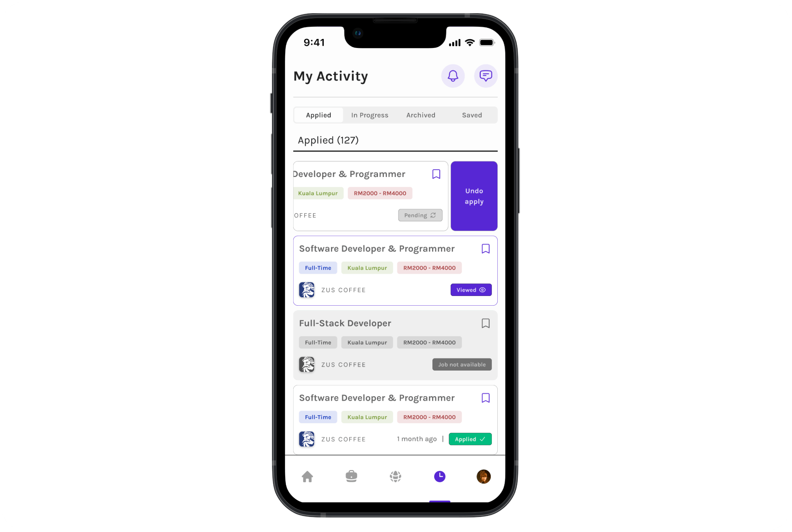
Results成果
What I Took From It我從中學到的事
- We removed the thing that made us different. The swipe was Hiredly's signature interaction, and the main reason user got confused. Distinctiveness is only worth defending when users are choosing you for it, and ours was tolerated, not chosen.
- 我們拿掉了讓我們與眾不同的那個功能。滑動介面曾是 Hiredly 最具代表性的互動方式，也是使用者弄丟原本想留住的職缺的主因。獨特性只有在使用者是「因為它而選擇你」時，才值得捍衛。我們的獨特，只是被容忍，而不是被選擇。
- We made onboarding longer on purpose. The friction wasn't in signing up, it was in what came after. A quick onboarding that leaves user unable to apply just moves the cost somewhere less visible.
- 我們刻意把新手導覽拉長了。真正的阻力不在註冊本身，而在註冊之後。一個看似快速、卻讓你無法應徵的新手導覽，只是把成本移到了一個比較不明顯的地方。
- We need more numbers to determine user satisfaction and ease of use. Profile completion or time from signup to first application, would tell us more about whether the journey actually got easier.
- 我們手上的數字，不是我們真正想要的數字。應徵數成長 40% 是真實的，但也很粗略。個人檔案完成度，或是從註冊到第一次應徵的時間，會更能告訴我們，這段旅程是不是真的變得更容易了。